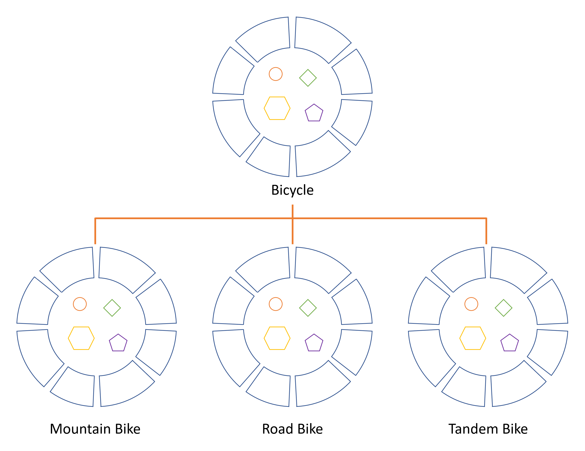
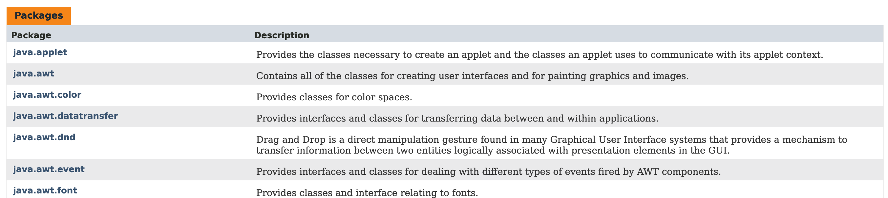
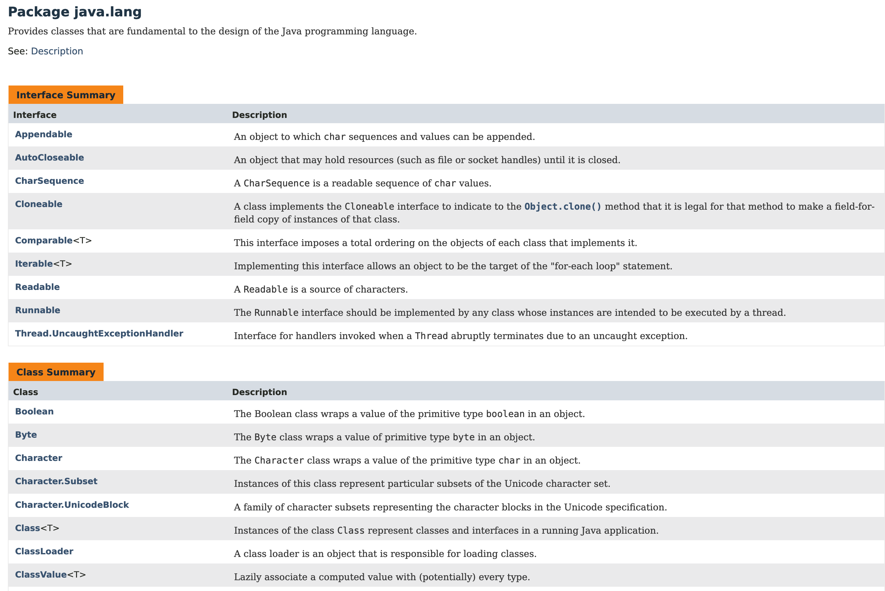

【官方】Java官方笔记2面向对象编程基本概念¶

对象Object¶
对象有2个特征：状态state和行为behavior。我们可以用真实世界的对象来做类比，这样有助于理解面向对象编程，比如狗的状态（名字、颜色、品种）和行为（叫、抓、摇尾巴），自行车的状态（当前档位、当前踏板节奏、当前速度）和行为（切换档位、切换踏板节奏、踩刹车）。
软件对象也是由状态和行为组成：

状态，在软件对象中，叫做字段fields，或变量variables。
行为，在软件对象中，叫做方法methods，或函数functions。
所谓的数据封装data encapsulation，就是字段只在内部，不对外暴露，仅由方法进行操作，对象与对象之间通过方法来相互访问。
Java是纯粹的面向对象编程语言。
类Class¶
类，可以视为对象的模版，基于类来创造出同一类对象。
比如自行车的类：
class Bicycle {
int cadence = 0;
int speed = 0;
int gear = 1;
void changeCadence(int newValue) {
cadence = newValue;
}
void changeGear(int newValue) {
gear = newValue;
}
void speedUp(int increment) {
speed = speed + increment;
}
void applyBrakes(int decrement) {
speed = speed - decrement;
}
void printStates() {
System.out.println("cadence:" +
cadence + " speed:" +
speed + " gear:" + gear);
}
}
类也是有2个特征：字段和方法。比如Bicycle类有字段cadence、speed、gear和方法changeCadence()、changeGear()、speedUp()等。
你可能会发现这个类里面没有main方法，因为Bicycle类只是定义了对象的模版，可以新建一个类来实现Bicycle类对象的创建和使用：
class BicycleDemo {
public static void main(String[] args) {
// Create two different
// Bicycle objects
Bicycle bike1 = new Bicycle();
Bicycle bike2 = new Bicycle();
// Invoke methods on
// those objects
bike1.changeCadence(50);
bike1.speedUp(10);
bike1.changeGear(2);
bike1.printStates();
bike2.changeCadence(50);
bike2.speedUp(10);
bike2.changeGear(2);
bike2.changeCadence(40);
bike2.speedUp(10);
bike2.changeGear(3);
bike2.printStates();
}
}
运行输出：
cadence:50 speed:10 gear:2
cadence:40 speed:20 gear:3
继承Inheritance¶
自行车有很多种，自行车的共同点可以用父类来表示，自行车的不同点可以用子类继承父类，然后添加自己的差异点：

图中的Bicycle是父类，MountainBike、RoadBike和TandemBike是子类。父类的字段和方法会同步给所有的子类，而子类可以继续添加自己的字段和方法。
继承使用extends来定义：
class MountainBike extends Bicycle {
// new fields and methods defining
// a mountain bike would go here
}
Java的子类只能有1个父类，但是父类可以有无限多个子类。
接口Interface¶
就像电视机开关一样，你跟电视机交互，只需要按开关就可以，电视机暴露出来的是方法。接口就是一组方法，只有方法声明，没有具体实现。比如：
interface Bicycle {
// wheel revolutions per minute
void changeCadence(int newValue);
void changeGear(int newValue);
void speedUp(int increment);
void applyBrakes(int decrement);
}
类使用implements来实现接口方法：
class ACMEBicycle implements Bicycle {
int cadence = 0;
int speed = 0;
int gear = 1;
// The compiler will now require that methods
// changeCadence, changeGear, speedUp, and applyBrakes
// all be implemented. Compilation will fail if those
// methods are missing from this class.
void changeCadence(int newValue) {
cadence = newValue;
}
void changeGear(int newValue) {
gear = newValue;
}
void speedUp(int increment) {
speed = speed + increment;
}
void applyBrakes(int decrement) {
speed = speed - decrement;
}
void printStates() {
System.out.println("cadence:" +
cadence + " speed:" +
speed + " gear:" + gear);
}
}
Java为什么要发明接口呢？我们知道对象与对象只能通过方法来相互访问，而接口其实就是一种契约，编译器会在编译时强制执行这份契约。就像文章的大纲一样。
实现接口的类，必须实现接口中的所有方法。
包Package¶
包相当于文件夹，用来组织接口和类。
Java API，也叫做Java类库，内置了很多包：
https://docs.oracle.com/javase/8/docs/api/index.html
包列表：

包里面的接口、类：

参考资料：
Objects, Classes, Interfaces, Packages, and Inheritance https://dev.java/learn/oop/